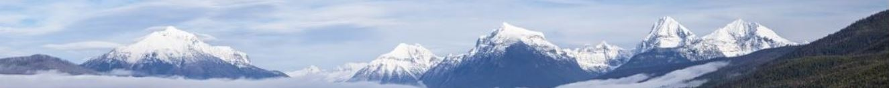

Beartooth Hiking Company
Getting you connected to Mother Nature.
| Destination | Duration | Difficulty | Cost |
|---|---|---|---|
| Gardiner Lake | 3 or 5 days | Intermediate | $40/day |
| The Hellroaring Plateau | 2, 3, or 4 days | Easy | $35/day |
| The Beaten Path | 5 or 7 days | Difficult | $45/day |
| All hikes have a 50% surcharge for Sat/Sun hikes. | |||
Check out the wilderness website for more information about the surrounding area.